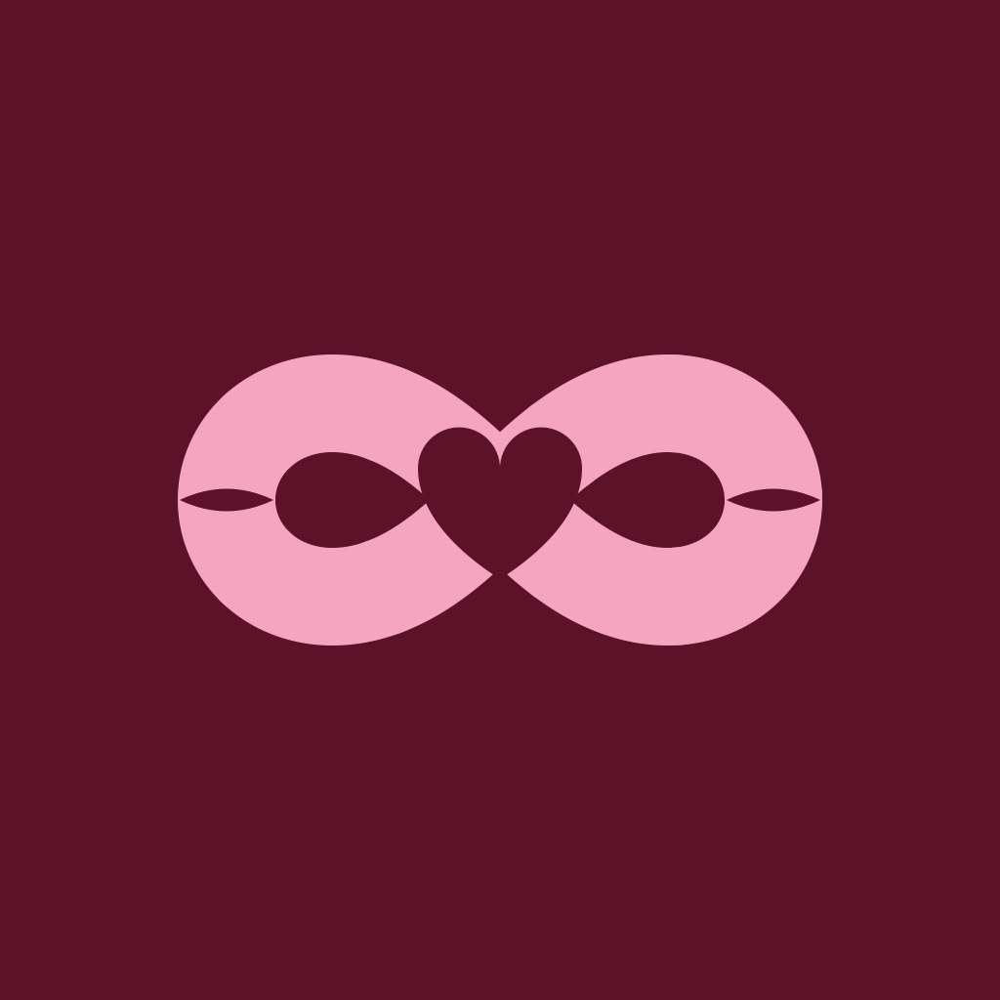
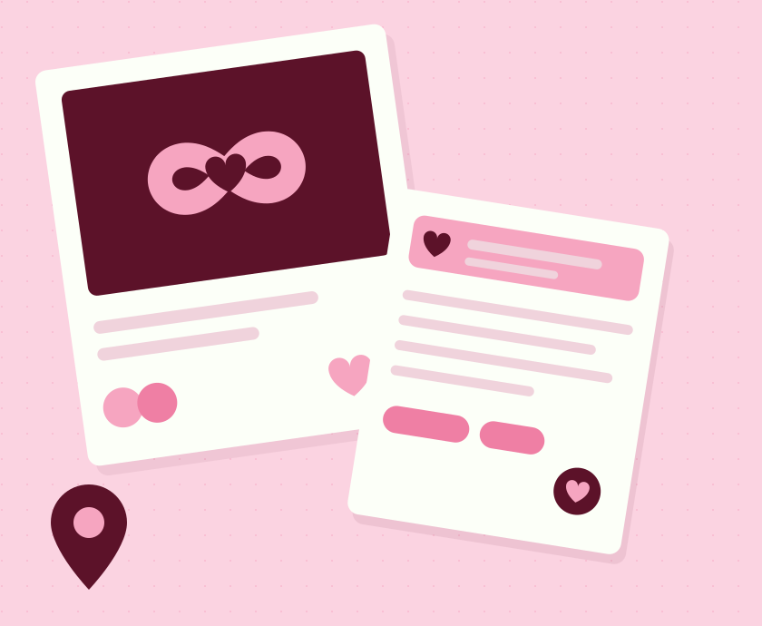

Memories that stay yours
Keep the photos, the milestones and the ordinary Tuesdays in one timeline the two of you build together.


LoveloopMemories, places, playlists and little notes in one shared space. Built for the two of you, and no one else.

Link with the one person you want in your loop. Everything you add lives between the two of you.
A photo, a place, a song, a question or a note. Small things, added without ceremony.
Nudges, quizzes and shared playlists give you reasons to come back to each other, not to a feed.
Loveloop is a small set of tools for staying close: somewhere to keep what matters, and a few good reasons to reach for each other during an ordinary week.
Keep the photos, the milestones and the ordinary Tuesdays in one timeline the two of you build together.
Let them see you’re on the way home, then switch it off. Location sharing is always your choice and never silent.
Send a nudge that stands out on a quiet phone, for the moments when later will not do.
Build shared playlists, add the song stuck in your head and let them hear what today sounded like.
Find out how well you actually know each other, one question at a time, and compare answers afterwards.
Leave a note for them to find later, or one for yourself to come back to. Small words, kept somewhere safe.
Support and policies for Loveloop.